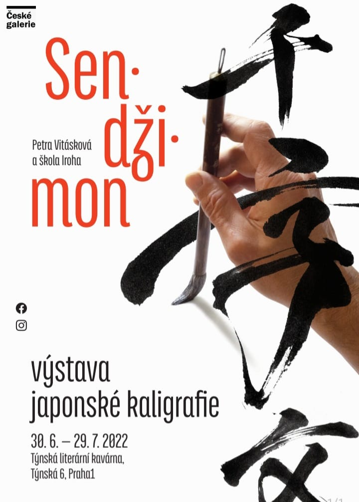
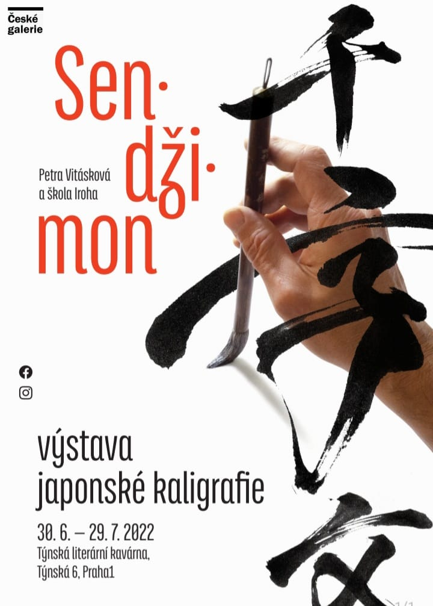

EXHIBITIONS IN MOTION
1.11.- 31.1.2025
IČI exhibition in the restaurant
Restaurant Miyabi Prague

PAST EXHIBITIONS
2025
Czech Republic, Prague,
Church of the Infant Jesus of Prague
Czech Republic, Veselí nad Moravou,
Městská galerie Panský dvůr
2024
Czech Republic, Prague, Budó Matsuri
Czech Republic, Prague, Botanical Garden
Czech Republic, Prague, Miyabi
2023
Japan, Yokohama, Kanagawa Kenmin Hall
Japan, Tokyo,
Tokyo Metropolitan Art Museum
Japan, Tottori, Shikano Gallery
Czech Republic, Prague, X10 Theatre
Czech Republic, Prague, Miyabi
Czech Republic, Prague, Galerie Kritiků
2022
Japan, Tokyo,
Tokyo Metropolitan Art Museum >
Japan, Tokyo, Kanagawa Kenmin Hall
Czech Republic, Prague, Týnská Café
Czech Republic, Prague,
Antiquarian Two Antiquarians
2021
Japan, Yokohama, Kanagawa Kenmin Hall
Czech Republic, Prague, Café Prostoru
Japan, Tokyo, Metropolitan Museum
Czech Republic, Prague, Galerie Kritiků
2020
Japan, Tokyo, Czech Cultural Center
Czech Republic, Prague, Modern Art Gallery
Czech Republic, Prague, Galerie Kritiků
2019
Czech Republic, Prague, Galerie Lucerna
Czech Republic, Prague, Divadlo Na prádle
Japan, Tokyo, Ueno Galery
Czech Republic, Prague, Galerie Kritiků


 
